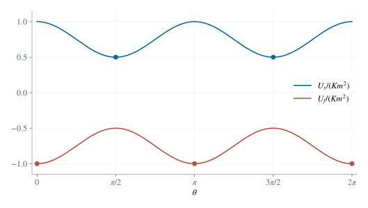

2.1 超导边界：消去法向磁场
记 mx=msinθ,mz=mcosθ。在界面任选 P=(x,y,0)，令 ρ2=x2+y2,R2=ρ2+h2。由真实偶极子指向 P 的矢量为 (x,y,−h)，故
Bzreal=4πR5μ0[−3hmxx+mz(2h2−ρ2)]. （3）设镜像磁矩为 ms=msxx^+mszz^。镜像到 P 的矢量为 (x,y,h)，因此
Bzimage=4πR5μ0[3hmsxx+msz(2h2−ρ2)]. （4）由 ∇⋅B=0，界面法向磁场连续。超导体内磁场为零，故真空侧须有 Bzreal+Bzimage=0。这一等式对任意 x,y 都成立，于是 x 项和 2h2−ρ2 项的系数分别为零。得到
ms=msinθx^−mcosθz^. （5）即镜像的切向分量同向，法向分量反向。
2.2 软磁边界：消去切向磁场
当 μ→∞ 时，介质中有限磁感应强度对应 H→0。无自由面电流时切向 H 连续，因此真空侧须有 Bx=By=0。真实偶极子与候选镜像 mf=(mfx,0,mfz) 产生的 x 分量之和为
Bx=4πR5μ0[(mx+mfx)(3x2−R2)+3hx(mfz−mz)]. （6）要求此式在整个平面为零，得到 mfx=−mx,mfz=mz。此时 By 中的因子 y[(mx+mfx)x+h(mfz−mz)] 也为零，两个切向条件均得到满足。因此
mf=−msinθx^+mcosθz^. （7）即镜像的切向分量反向，法向分量同向。
2.3 计算作用于真实磁矩的力矩
从镜像指向真实偶极子的距离为 2h，方向为 +z^。令 K=μ0/(32πh3)，则任意镜像在真实偶极子处产生的场为
Bim=K(−mx′x^+2mz′z^). （8）真实偶极子受到的是镜像所代表的介质场。对位于 xz 平面的两个矢量，叉积只有 y 分量，且 τy=mzBx−mxBz。超导镜像给 Bx=−Kmx、Bz=−2Kmz，所以 τs,y=−Kmxmz+2Kmxmz=Kmxmz；软磁镜像恰反号。再代入 mxmz=m2sinθcosθ，得到
BsBfτsτf=−K(mxx^+2mzz^),=K(mxx^+2mzz^),=32πh3μ0m2sinθcosθy^,=−32πh3μ0m2sinθcosθy^. （9）这里 y^=z^×x^；绕 +y 的转动使磁矩由 +z 转向 +x，恰好对应 θ 增大。
2.4 逐一判定平衡取向的稳定性
令 C=Km2>0。两种介质分别有 τs=Csinθcosθ、τf=−Csinθcosθ。平衡位置为 θ=0,π/2,π,3π/2（模 2π）。在平衡点附近令 θ=θ∗+η，若 τ′(θ∗)<0，微小偏离产生回复力矩。由
τs′(θ)=Ccos2θ,τf′(θ)=−Ccos2θ, （10）可知超导体对应 θ=π/2,3π/2 稳定，即磁矩平行界面；软磁体对应 θ=0,π 稳定，即磁矩垂直界面。弱阻尼耗散转动能量，使一般初态趋向其中一个稳定取向。

图 2. 两种介质对应的取向势能。实心点为极小值；超导体使磁矩趋向平行界面，软磁体使其趋向垂直界面。